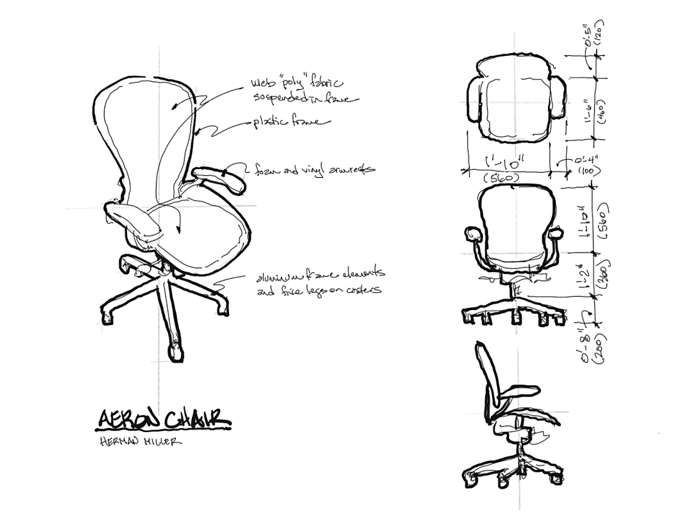

Sketch B. Field Sketch of a Chair
Introduction

Figure 3.1.1: Sketch B. Field Sketch of a Chair
Select a chair to document in a drafted plan, front elevation, and side elevation. Begin by measuring the chair and recording the dimensions in your sketchbook. Make quick sketches and detail views to record important information. Use these “working drawings” to develop the final drafted views.
Learning
This assignment module contributes to the following design learning outcomes, which finish the sentence “As a successful student in this course, I am now able…”
… to analyze the built environment and apply measured drawing skills that include plans and elevations, illustrating line quality, drawing notation and dimensioning.
Scenario
Going out to the field and measuring existing conditions is one of the most common activities in a professional design office. The first step in most projects is to photograph, measure and make drawings with notes. These field notes are a valuable resource back in the office when we begin to make the technical drawings.
Since most technical drawings that designers produce for construction are orthographic, then a good skill to develop is the translation through drawing of three-dimensional spatial conditions to two-dimensional projections, such as plans, sections and elevations.
As a professional architect who teaches architecture and engineering students, I am often asked by people outside of the profession why we still learn drawing by hand. In an age of computer-aided drawing, why would a student want to know how to draw by hand when the computer is so excellent? There are so many answers to this question, and we’ll talk about one of them now. The field sketch of existing conditions is the most efficient, effective and inexpensive method for verifying and beginning a construction project. These field sketches and early photographs are so important to the project, that they are kept in the official job file, not to be discarded. They are an important component of the construction documents and are legal documents in practice. We should learn together how to gather good documentation and make effective sketches.
In this assignment, we’ll work on a single object: a complex chair. In several assignments coming up, we’ll apply these skills to room plans, elevations and sections in preparation for our first construction document drawing.
Materials
Phone camera or digital camera
Pencil
Tape measure
Sketchbook
1:96 Isometric Grid Paper
1:48 Grid Paper
Steps
Select a complex chair. A good source for your selection is an office chair with rolling casters. This offers the challenge of non-uniform shapes and complex mechanisms that make your drawing a more rewarding challenge than a three-legged stool for instance.
With a tape measure, identify the overall height, width and chair dimensions. Construct a three-dimensional box of these lengths using the provided isometric grid. Drawing this grid freehand and with the isometric grid promotes sketching precision without the need for drafting tools.
Photograph your chair from approximately the same oblique view that you drew the isometric container box. It is useful to also photograph a top view and front and side views, because these are the views you will draft in the related assignment, Exercise Four. Hand Drafting an Orthographic Multi-view Projection of Complex Chair.
Transfer the silhouette (outline) of the projected view for each of three drawings: top view, front elevation and side elevation. Concentrate on the proportions of the silhouette. Sketch these on each of the visible faces of the isometric box. Recall that these are orthographic drawings, and that no perspective distortion should be evident.
Redraw the three views on the 1:48 grid paper. The experience should be one of flattening the three-dimensional chair as a projection first on the box, and then enlarging that map at twice the scale. Make several notes as to materials and relevant descriptive ideas about the chair.
Taking our analysis from the general to the specific, use the tape measure and take important inner dimensions and note important relationships. We are learning to see the chair objectively. Include dimensional information about the inner elements and details. When we do our final drawing project for the chair in Exercise Four, we will again redraw the three views and enlarge them to 1:12 scale.
Collect all sketches and photographs together. Digitize all of the imagery you have made and analyses that you documented and compose them together onto one board. The final submission should be saved as a raster image with pixel dimensions 1224 px by 792 px.
Tips
Recall that these are orthographic drawings, and that no perspective distortion should be evident.
Taking a large clipboard to the field is useful in providing a mobile and hard surface to draw.
Photograph everything about the chair. You will be glad to have the information when back in the studio.
Criteria
| DLO | Advanced (4 pts) | Proficient (3 pts) | Developing (2 pts) | Beginner (1 pt) |
| Craft | Illustrator demonstrates exemplary attention to work product and excellence. | Illustrator demonstrates good attention and care towards work product. | Illustrator completes work, but the product seems rushed to completion. | Illustrator demonstrates attention towards work product, but work quality is |
| Rendering | Illustrator uses line to hold the viewer's attention. Image is controlled and evokes both power and subtlety. Image is descriptive and/or symbolic and supports compositional goals. | Illustrator's line work demonstrates several professional attributes. Rendering style does not distract the viewer and generally supports compositional objectives. | Illustrator's use of line is somewhat effective. Rendering style is consistent and competent. There are some non-contributing attributes. | Illustrator attempts to use line descriptively. Rendering is inconsistent and lacks attention to craft. |
| Technical | Illustrator observes and analyzes object data and translates it to a meaningful graphic representation. Professional conventions are followed, inclusive of line weight, orthographic and dimensional information. | Illustrator observes and analyzes object data and translates it to a meaningful graphic representation. Most professional conventions are followed, and some information is missing. | Illustrator is challenged to observe and analyze object data correctly. Few professional conventions are followed, and some information is missing. | Illustrator attempts to observe and analyze object data and representation is inconsistent. Professional drawing conventions are not followed. |
| Professionalism | Student completes the work on time. Work demonstrates exemplary attention to learning objectives. | Student completes the work on time and demonstrates a good work ethic. | Student generally completes the work at a minimum level of expectation. | Student is missing parts of the work and makes a plan for completion of the remaining assignment. |
Related Assignments
Exercise Four. Hand Drafting an Orthographic Multi-view Projection of Complex Chair
Sketch C. Field Sketches of Floor Plans of Five Large Rooms
Sketch D. Field Sketches of Two Exterior Elevations of Large Buildings
Sketch E. Field Sketches of Two Interior Elevations of Large Rooms
Sketch F. Field Sketches of Five Partial Interior Sections of Large Room
Exercise Seven. Interior Construction Drawing. Floor Plan and Interior Elevations